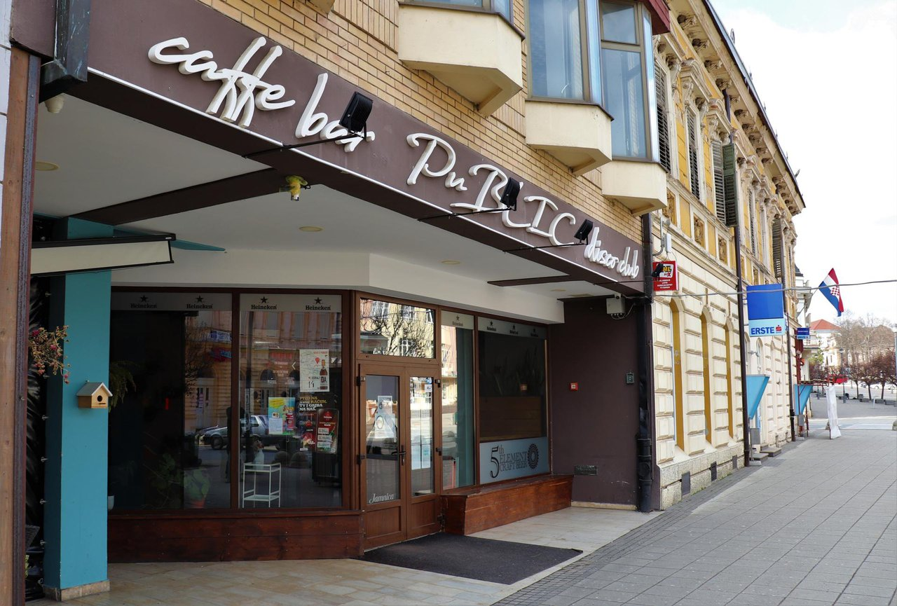
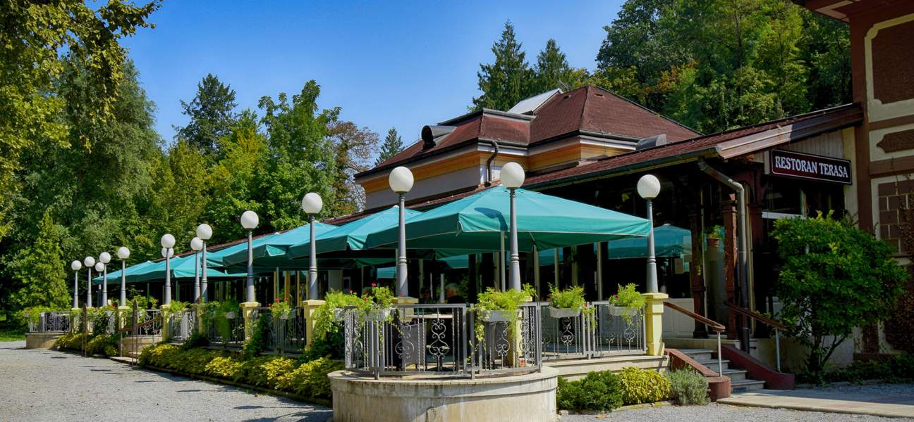
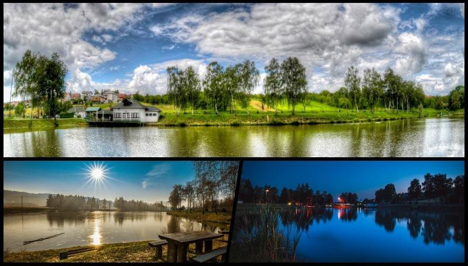
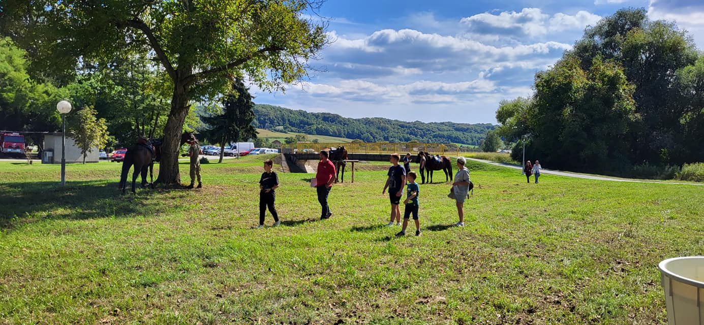

Vodić kroz grad
Kafići

Daruvar je grad koji nudi raznolike mogućnosti za uživanje u kafićima i opuštanje uz omiljeno piće. Bez obzira jeste li posjetitelj ili stanovnik grada, u Daruvaru možete pronaći nekoliko ugodnih kafića koji će zadovoljiti vaše želje i pružiti vam ugodno iskustvo.
U samom centru grada nalaze se kafići s terasama koje omogućuju uživanje u atmosferi grada i promatranje živahnog gradskog života. Ovdje možete sjesti, popiti kavu ili čaj, i opustiti se dok promatrate prolaznike ili razgovarate s prijateljima.
Daruvar također nudi kafiće s posebnim tematskim konceptima. Možete posjetiti moderno uređene kafiće s elegantnim interijerom i ambijentom koji pruža sofisticiranu atmosferu. Tu su i kafići s umjetničkom ili vintage tematikom, gdje možete uživati u autentičnom i originalnom doživljaju.
Restorani
Daruvar je grad poznat po svojoj gastronomskoj ponudi koja zadovoljava različite ukuse i preferencije. U ovom gradiću možete pronaći raznolike restorane koji nude bogatstvo okusa, autentičnih jela i ugodno okruženje za gastronomsko uživanje.
Restorani u Daruvaru nude širok spektar kulinarskih iskustava, od tradicionalne domaće kuhinje do internacionalnih specijaliteta. Mnogi restorani koriste svježe i lokalno uzgojene namirnice kako bi stvorili jela s autentičnim okusom i pružili vrhunski gastronomski doživljaj.
Ako volite tradicionalnu hrvatsku kuhinju, restorani u Daruvaru nude razne specijalitete poput domaćih juha, mesnih jela s roštilja, domaćih tjestenina, ribljih delicija i mnogo više. Možete uživati u bogatim okusima i aromama koje oživljavaju autentičnu domaću kuhinju regije.
Uz tradicionalne specijalitete, u Daruvaru možete pronaći restorane koji nude internacionalnu kuhinju. Ovdje možete kušati razna jela iz talijanske, meksičke, azijske i ostalih kulinarskih tradicija. S raznolikim jelovnicima i kombinacijom različitih okusa, restorani će zadovoljiti i najzahtjevnija nepca.
Neki restorani u Daruvaru također nude posebna jela za vegetarijance, vegane ili osobe s posebnim prehrambenim potrebama. Ovi restorani imaju širok izbor biljnih opcija koje su ukusne i zdrave, te su prilagođene različitim prehrambenim stilovima.

Daruvarsko jezero

Daruvarsko jezero je jedno od najpopularnijih prirodnih odredišta u gradu Daruvaru. Nalazi se nedaleko od centra grada i predstavlja oazu mira i ljepote u kojoj posjetitelji mogu uživati u prekrasnom okruženju prirode.
Jezero je idealno mjesto za opuštanje i rekreaciju. Okruženo je zelenilom, šumom i livadama te pruža mogućnost za šetnje, trčanje ili biciklizam duž njegovih obala. Možete prošetati stazom koja vodi oko jezera i uživati u svježem zraku i prekrasnom krajoliku.
Za ljubitelje vodenih aktivnosti, Daruvarsko jezero pruža mogućnost za kupanje i plivanje tijekom toplijih mjeseci. Voda je čista i osvježavajuća, što čini jezero omiljenim odredištem za lokalno stanovništvo i posjetitelje. Možete se opustiti na plaži, sunčati ili jednostavno uživati u vodenim radostima.
Hipodrom
Hipodrom Daruvar je popularno odredište među ljubiteljima konjičkog sporta i događanja. Smješten u prekrasnom okruženju grada Daruvara, hipodrom nudi raznolike aktivnosti i natjecanja vezana uz konjički sport.
Hipodrom predstavlja mjesto gdje se održavaju utrke konja, koje privlače kako lokalno stanovništvo, tako i posjetitelje iz drugih mjesta. Možete doživjeti uzbudljive trenutke gledajući konje kako jure stazom i natječu se za pobjedu. Utrke konja pružaju dinamičan i adrenalinski doživljaj te su često popraćene uzbuđenjem i navijanjem publike.
Osim utrka, hipodrom Daruvar također organizira razna događanja i manifestacije vezane uz konjički sport. To mogu biti dani otvorenih vrata, škole jahanja, treninge ili radionice o njezi i brizi za konje. Posjetitelji imaju priliku upoznati se s konjima, jahačima i stručnjacima te naučiti više o konjičkom sportu.
Hipodrom Daruvar je također mjesto gdje se održavaju različite kulturne manifestacije i zabavni programi. To mogu biti koncerti, sajmovi, izložbe ili tematski događaji koji privlače posjetitelje različitih interesa. Hipodrom pruža prostor za okupljanje i druženje te stvara posebnu atmosferu koja privlači ljude svih dobnih skupina.
